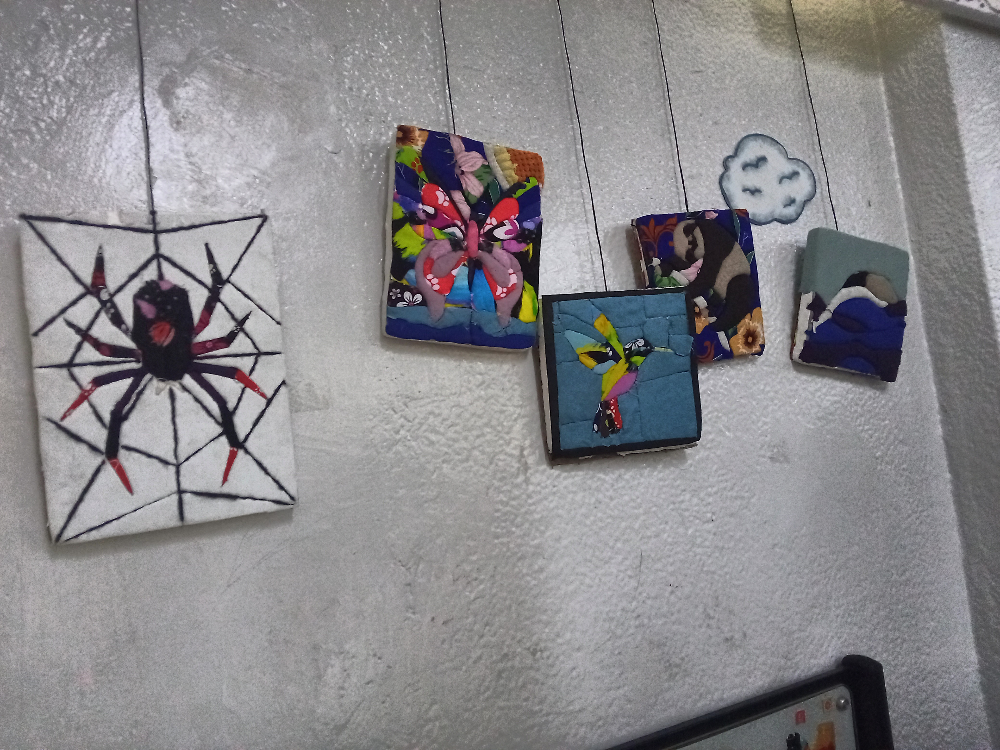
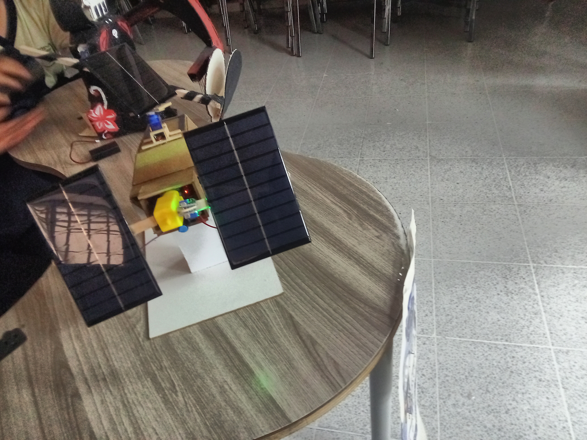
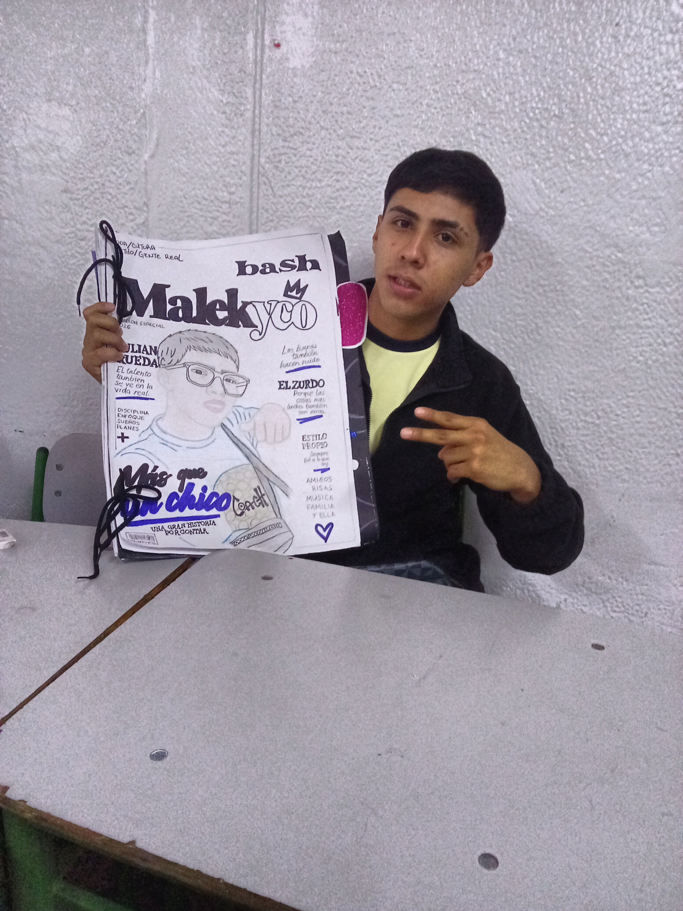

Proyectos de Ciclos
Conoce las experiencias, aprendizajes y proyectos que construyen nuestros estudiantes en cada etapa de su formación.
Nuestros proyectos pedagógicos
Selecciona un ciclo para conocer sus experiencias y proyectos.
 01
Conocer proyecto →
01
Conocer proyecto →
Ciclo Inicial
Explora las experiencias y proyectos de nuestros primeros años escolares.
Explorar ciclo ↗
02 Conocer proyecto →Ciclo 3
Conoce los procesos de aprendizaje y las experiencias desarrolladas en este ciclo.
Explorar ciclo ↗
03 Conocer proyecto →Ciclo 4
Descubre los proyectos de astronomía, tecnología y robótica.
Explorar ciclo ↗
04 Conocer proyecto →Ciclo 5
Conoce las propuestas y experiencias que fortalecen el proyecto de vida de nuestros estudiantes.
Explorar ciclo ↗